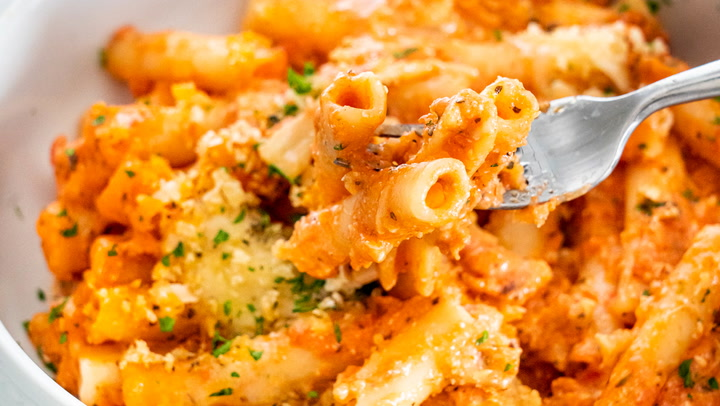

Baked Ziti

Description
This easy baked ziti recipe with ricotta, mozzarella, and Parmesan is so good! Three cheeses layered with pasta and marinara sauce — delicious!
Ingredients
- 1 16 ounce package ziti pasta
- 24 ounces ricotta cheese
- 1 pound shredded mozzarella cheese
- 1 egg beaten
- 1 32 ounce jar spaghetti sauce
- 1/4 cup grated Parmesan cheese
Steps
- Preheat the oven to 375 degrees F (190 degrees C). Lightly grease a 9x13-inch baking dish.
- Meanwhile, bring a large pot of lightly salted water to a boil. Add ziti and cook for 8 to 10 minutes or until al dente; drain and rinse.
- Combine cooked ziti, ricotta cheese, mozzarella cheese, egg, and 1 1/2 cups spaghetti sauce in a medium bowl.
- Transfer into the prepared baking dish. Top with remaining spaghetti sauce, then sprinkle with Parmesan cheese.
- Bake in the preheated oven for 30 minutes; let stand for 15 minutes before serving.
Top
Home